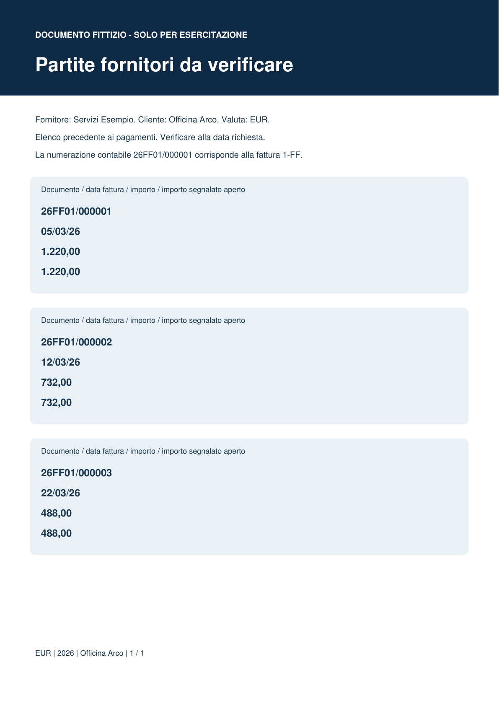

File della lezione
open-items-it.pdf
files/input/open-items-it.pdf
Qui puoi leggere il contenuto del file fornito per la lezione. La funzione usa il file originale; questa pagina serve solo per leggerlo.

File della lezione
files/input/open-items-it.pdf
Qui puoi leggere il contenuto del file fornito per la lezione. La funzione usa il file originale; questa pagina serve solo per leggerlo.
